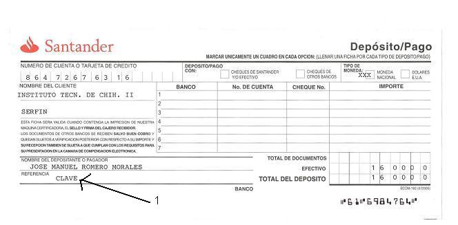

INSTITUTO TECNOLÓGICO DE CHIHUAHUA II
COMUNICA A
LOS ESTUDIANTES DEL INSTITUTO
LAS FECHAS DE PAGO PARA INSCRIPCIONES
EN EL SEMESTRE AGOSTO - DICIEMBRE DEL 2007
FECHAS PARA EL PAGO DE INSCRIPCIONES:
EL PAGO PARA ALUMNOS DE NUEVO INGRESO Y REINSCRIPCIÓN SE EFECTUARÁ EN CUALQUIER SUCURSAL DEL BANCO SANTANDER SERFIN,
HORARIO DE PAGOS: DE 9:00 A 16:00 HRS. DE LUNES A VIERNES EN EL BANCO SANTANDER SERFIN DE TU ELECCIÓN
CUOTAS: PRIMER SEMESTRE Y CAPACITACIÓN $1,600.00
SEGUNDO SEMESTRE EN ADELANTE $1,300.00
NUMERO DE CUENTA: 86472676316
PASOS A SEGUIR PARA REALIZAR EL PAGO DE INSCRIPCIÓN Y CANJE DE RECIBO OFICIAL:
1.- Teclear tu número de control para obtener tu número de clave (que pondrás en el campo "REFERENCIA" de la ficha de pago), la cual será necesaria para realizar el pago. Al final de la página está el programa para obtener tu clave.
2.- Llenar la ficha del banco conforme al ejemplo que se te presenta mas adelante.
3.- Realizar el pago de inscripción en el Banco Santander Serfin que más te convenga en el horario y fechas arriba mencionados.
4.- Realizar el canje de la ficha por tu recibo oficial en la Biblioteca del Instituto el día 22 de enero del 2007 de 9:00 a 12:00 hrs.
NOTA:
A) Se comunica que en caso de requerir recibo oficial (deducible), deberá acudir con su ficha de depósito al Depto. de Recursos Financieros de 9:00 a 14:00 hrs.
B) Todo alumno que no realice su pago en el Banco en las fechas señaladas, deberá hacerlo en el Departamento de Recursos Financieros del Instituto con cargo adicional de $500.00 (sin excepción).
C) No habrá devolución por cancelación de inscripciones.
D) No se concederá prórroga para el pago de cuota de inscripción.
E) Para su mejor atención se recomienda efectuar el pago correspondiente en la Sucursal de Santander Serfín de su elección.
F) Para los alumnos que están bajo el convenio SEIT deberán realizar todo su trámite en el Depto. de Recursos Financieros el día 15 de enero del 2007, de 9:00 a 14:00 horas, traer original y copia de la constancia y del talón de cheque del trabajador, copia del acta de nacimiento y copia de la boleta.
G) Los alumnos que presenten examen de admisión realizarán su pago en el Depto. de Recursos Financieros los dias 24 y 25 de enero del 2007.
EJEMPLO DE LLENADO DE LA FICHA DEL BANCO.
|  |
| Consulta en este programa tu dígito verificador. Si el programa no
está disponible, debes deshabilitar "Bloquear contenido" en el
explorador Web. Si aún así el programa no funciona debes instalar el "Java Runtime Environment"
desde la página: http://www.java.com/es/download/index.jsp
MUY IMPORTANTE. Tomar en cuenta que poner tu CLAVE correcta es necesario para identificar adecuadamente el pago. Y de esta manera no tengas que regresar al banco o retardar tu proceso de inscripción. |